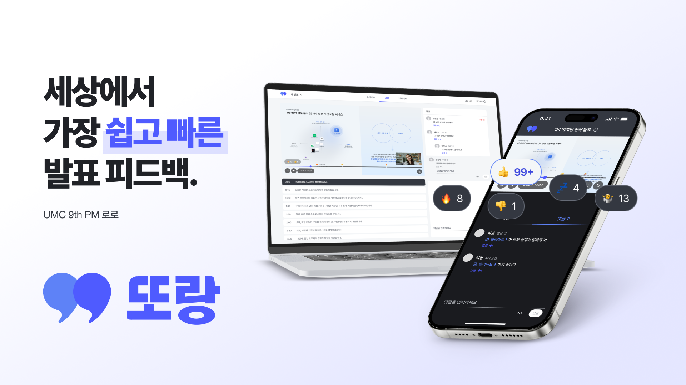

UMC 9기 데모데이 최우수상
2025.12 ~ 2026.02
Web Frontend Architecture
또랑 (TTORANG)
발표 자료, 대본, 영상을 링크 하나로 공유하고 익명으로 피드백받는 웹 서비스

프로젝트 목표 및 역할
목표: 발표 연습과 피드백을 간결하게 만들어, 자료부터 대본, 스피치까지 발표의 전 과정을 개선할 수 있도록 돕는 웹 플랫폼입니다. 웹 프론트엔드의 핵심인 [웹캠 녹화 - 1MB 청크 분할 업로드 - 타임스탬프 동기화 재생] 파이프라인과 전역 상태 아키텍처를 전담했습니다.
사용 기술 (Tech Stack)
Framework
React 18, TypeScript, Vite
State & Query
Zustand, TanStack Query v5
Media & Network
MediaRecorder API, hls.js, Axios
주요 구현 방식 (Technical Implementation)
A. 브라우저 부하 격리를 위한 분리 녹화 아키텍처
기존 Canvas API 화면 합성 방식을 배제하고 [웹캠 단독 캡처(480p Blob) + 슬라이드 전환 타임스탬프 JSON 분리 수집] 구조로 전환하여 장시간 녹화 시 브라우저 크래시 0건을 달성했습니다.
B. 3-Phase 청크(1MB) 분할 업로드 파이프라인
5분 이상 비디오를 1MB 단위의 Blob 청크로 쪼개어 순차 전송하고, 업로드 진행률 계산 UI를 제공하여 대용량 비디오의 타임아웃 문제를 해결했습니다.
C. Zustand 기반 비디오 동기화 엔진
비디오 플레이어의 재생 시간에 맞춰 슬라이드 뷰어, 발표 대본, 피드백 댓글이 밀리초 단위로 지연 없이 동기화되도록 단일 상태 저장소에서 양방향 탐색 및 시간 업데이트를 중앙 통제했습니다.